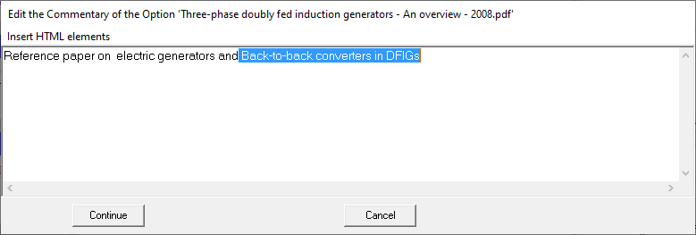
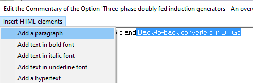
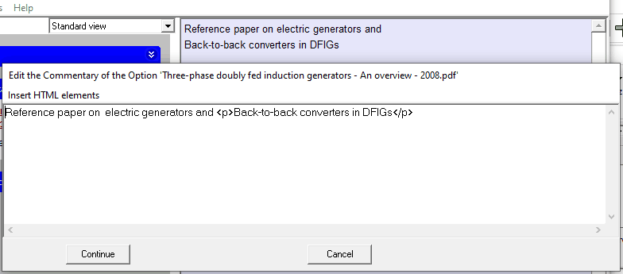

Insert a new paragraph
In an HTML text 'paragraph' changes require a "<p> ... </p>" element, since carriage returns, which is the common procedure for this operation in word processors, are not presented. Example:
HTML text | Result | Menu option |
First paragraph.<p>Second paragraph.</p> | First paragraph. Second paragraph. | "Add a paragraph" |
The "Edit the Comment ..." form allows you to automatically insert a "<p>" element when inserting two consecutive "carriage returns". Alternatively, you may include a jump to the following paragraph selecting the text. The following figures show the procedure.

First select the text to be passed to a new paragraph: " Back-to-Back converters in DFIGs".

Then open the "Insert HTML elements" menu and select " Add a paragraph ":

After using the " Add a paragraph ", the Comment shows a change of paragraph after the " and", and the text box in the "Edit the Commentary ..." shows the actual HTML text, that includes the "<p>" "</p>" pair.
